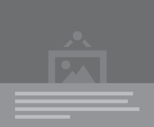

OpenWisp - Radius
The new openwisp module which provides a web interface and RESTful API to manage freeradius.
OpenWisp - Radius utilises the django - freeradius module inorder to achieve the
task of providing a web controller for managing RADIUS databases
FreeRadius
FreeRADIUS is a RADIUS server which was designed in the early 90’s to encourage community networks. FreeRadius with it’s modular and scalable design, supports all common authentication protocols and over time, FreeRadius has become Opensourced. Due to it’s ability to support Virtual Servers, Freeradius has been ranked as the most used Radius Server. In a bid to make operations easier, it has a default PHP – based web user administration tool called Dialupadmin.
See Installation GuideOpenWisp - Radius is blaaaaaaaaaaaaaaaaaaaaaaaaaaaaaaaaaaaaaaaaaaaaaaaaaaaaaaaaaaaaaaaaaaaaaaaaaaaaaaaaaaaaaaaaaaaaaaaaaaaaaa of django - FreeRadius is aaaaaaaaaaaaaaaaaaaaaaaaaaaaaaaaaaaaaa
Motivation and Goals
After Running the OpenWisp1 with it's freeradius module for years, the following reasons made OpenWisp Team see the glaring need for an immediate update
The OpenWisp Team however identified the aim of the new release as to
"Offer a web application and documentation that helps people from all over the world to implement a wifi network that can use freeradius to authenticate its users, either via captive portal authentication or WPA2 enterprise".
OpenWisp2 shall have an improved performance as we work hard to overhaul our entire codebase and apply all the UNIX philosophies
This is just a summary of the goals and motivation, please visit OpenWisp Motivation and Goals for the full account on the Goals and Motivation of the new release
Features of OpenWisp - Radius
Since it's launch in {{ }}, the openwisp - Radius module has been utilized by all OpenWisp users due to it's outstanding features which were designed make openwisp easier to use.

Eu quo homero blandit intellegebat. Incorrupte consequuntur mei id. Mei ut facer dolores adolescens, no illum aperiri quo, usu odio brute at. Qui te porro electram, ea dico facete utroque quo. Populo quodsi te eam, wisi everti eos ex, eum elitr altera utamur at. Quodsi convenire mnesarchum eu per, quas minimum postulant per id.
| Recent Updates | ||||||||||||||||||||||||||||||||||||||||||||||||||||||||||||||||||||||||||||||||||||||||||||||||||||||||||||||||||
|---|---|---|---|---|---|---|---|---|---|---|---|---|---|---|---|---|---|---|---|---|---|---|---|---|---|---|---|---|---|---|---|---|---|---|---|---|---|---|---|---|---|---|---|---|---|---|---|---|---|---|---|---|---|---|---|---|---|---|---|---|---|---|---|---|---|---|---|---|---|---|---|---|---|---|---|---|---|---|---|---|---|---|---|---|---|---|---|---|---|---|---|---|---|---|---|---|---|---|---|---|---|---|---|---|---|---|---|---|---|---|---|---|---|---|
| node_modules | Initial commit | 10 hours ago | ||||||||||||||||||||||||||||||||||||||||||||||||||||||||||||||||||||||||||||||||||||||||||||||||||||||||||||||||
| test | Initial commit | 10 hours ago | ||||||||||||||||||||||||||||||||||||||||||||||||||||||||||||||||||||||||||||||||||||||||||||||||||||||||||||||||
| build | Initial commit | 10 hours ago | ||||||||||||||||||||||||||||||||||||||||||||||||||||||||||||||||||||||||||||||||||||||||||||||||||||||||||||||||
| package.json | Initial commit | 10 hours ago | ||||||||||||||||||||||||||||||||||||||||||||||||||||||||||||||||||||||||||||||||||||||||||||||||||||||||||||||||
| Gruntfile.js | Initial commit | 10 hours ago | ||||||||||||||||||||||||||||||||||||||||||||||||||||||||||||||||||||||||||||||||||||||||||||||||||||||||||||||||
 Make Contributions
Make Contributions
OpenWisp is completely opensourced. We therefore welcome external contribution from those who wish to help us grow.
Read the Contributions guide here before making an attempt at contributing to openwisp
Contribute
46+ Repositories
The OpenWisp Team works tirelessly to improve the entire codebase.
Would you like to have a glance at our public repositories and star them?
Help Us Grow
You can help us grow by making contributions, reporting issues and adding to the docs